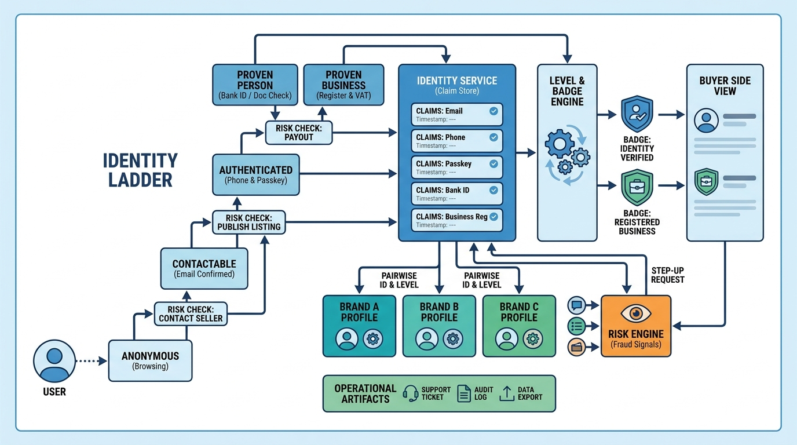

Part V — TRUST: Keeping the Marketplace Safe
Who Is on the Other Side? Identity and Verification

Image generated by Google Gemini (gemini-3-pro-image-preview)
Part V — TRUST: Keeping the Marketplace Safe

Image generated by Google Gemini (gemini-3-pro-image-preview)